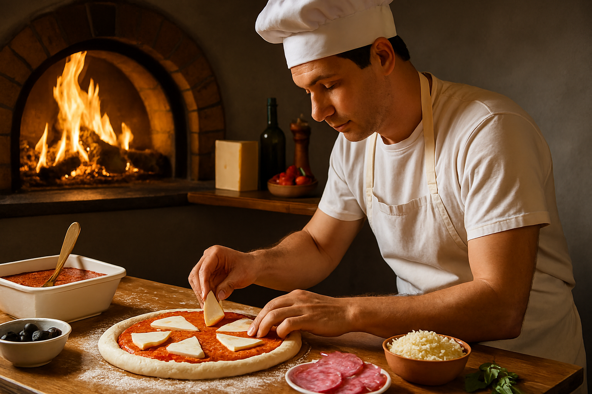

Perjalanan Kami
Bermula dari dapur kecil di Bandung pada tahun 2015, Pizza Nusantara hadir untuk menjawab keinginan masyarakat Indonesia akan pizza dengan sentuhan lokal. Kami memadukan cita rasa Italia dengan kekayaan rempah Indonesia menciptakan harmoni rasa yang menggoda selera.
Seiring berjalannya waktu, kecintaan pelanggan terhadap inovasi rasa membuat kami terus berkembang hingga membuka berbagai cabang di seluruh Indonesia. Setiap pizza yang kami buat tidak hanya mengutamakan kelezatan, tetapi juga membawa cerita tentang jenis pizza.
Pizza Nusantara bukan sekadar makanan ini adalah bentuk cinta kami terhadap Indonesia, yang disajikan hangat di setiap potongannya.
Awal Berdiri
Pada masa awal, kami memulai hanya dengan dua oven dan tim kecil beranggotakan lima orang. Kini kami telah memiliki cabang di lebih dari 10 kota besar di Indonesia, berkat kepercayaan pelanggan.
Nilai Kami
- Menjaga kualitas bahan dan kebersihan dapur.
- Mengutamakan pelayanan cepat dan ramah.
- Menghadirkan pengalaman rasa yang khas di setiap potongan pizza.
